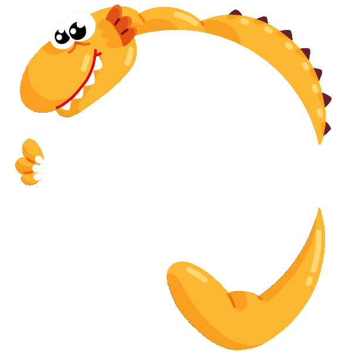

I’m a product designer living in the Sierra Nevada. Most recently I’ve been working at Netflix building the games social platform and previously was on the commerce team growing subscribers.
Before that I worked at Discord helping people express themselves and grow the Nitro subscription product. During my time at Meta, I designed ad formats, creator products, and all types of video formats across Instagram and the Facebook App.
I get excited by prototyping, exploring artificial intelligence, and well crafted products. I’m always interested in pushing digital mediums to the next levels of immersion.
Currently available for full-time roles.